쌍곡선 함수의 홀짝성을 최적화에 사용하기
같은 수학적 성질도 intrinsic 경로와 라이브러리 호출 경로에서 각각 처리해야 한다.
LLVM-good_first_issue_173706.pdf의 전체 내용입니다. 설명·코드·표·검증 기록을 생략하지 않고 옮겼습니다. 그림 안의 문자 인식 결과에는 기호 오류가 있을 수 있어 이미지도 함께 제공합니다.
이 문서의 목차
L V / M / L
VM L L
good first issue 분석
#173706 김명석
2026.07.25
페이지 배치·기호·도식 확인하기

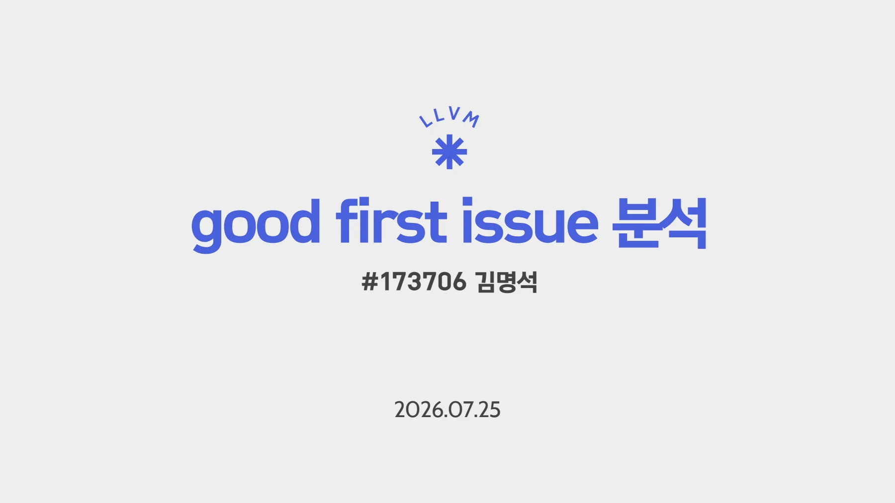
Contents / 1. issue 분석 / 2. PR 예상
Contents
1. issue 분석
2. PR 예상
3. PR 예상 확인
4. 실제 PR 확인
5. 정리
페이지 배치·기호·도식 확인하기

ISSUE 분석 / Handle f(-x)=f(x) for cosh and f(-x)=-f(x) for sinh and tanh / sinh, tanh, cosh가 특정 입력에 대해서 최적화되지 않
ISSUE 분석
Handle f(-x)=f(x) for cosh and f(-x)=-f(x) for sinh and tanh
sinh, tanh, cosh가 특정 입력에 대해서 최적화되지 않음을 제기
sin(x), sinh(x), tan(x), tan(h)는 기함수
cos(x),cosh(x)는 우함수
따라서,
하지만 해당 최적화가 LLVM with Clang에서 이루어지지 않는다.

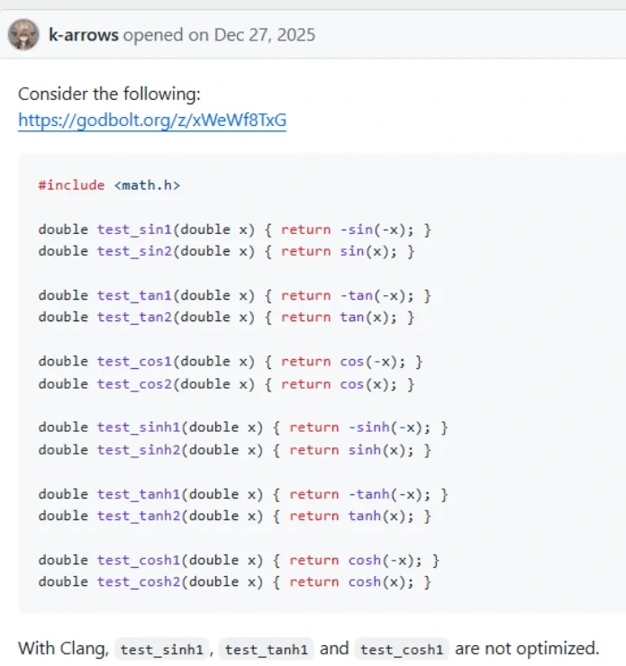
그림 안의 텍스트 · 문자 인식
k-arrows opened on Dec 27, 2025
Consider the following:
https://godbolt.org/2/xWeWf8TxG
#include <math.h>
double test_sin1(double x) { return -sin(-x); }
double test_sin2(double x) { return sin(x); }
double test_tan1(double x) { return -tan(-x); }
double test_tan2(double x) { return tan(x); }
double test_cos1(double x) { return cos(-x); }
double test_cos2(double x) { return cos(x); }
double test_sinh1(double x) { return -sinh(-x); }
double test_sinh2(double x) { return sinh(x); }
double test_tanh1(double x) { return-tanh(-x); }
double test_tanh2(double x) { return tanh(x); 7
double test_cosh1(double x) { return cosh(-x); }
double test_cosh2(double x) { return cosh(x): 3
With Clang, test_sinh1, test_tanhl and test_coshi are not optimized.이미지에서 읽은 문자입니다. 코드 기호는 그림에서 확인하세요.
페이지 배치·기호·도식 확인하기

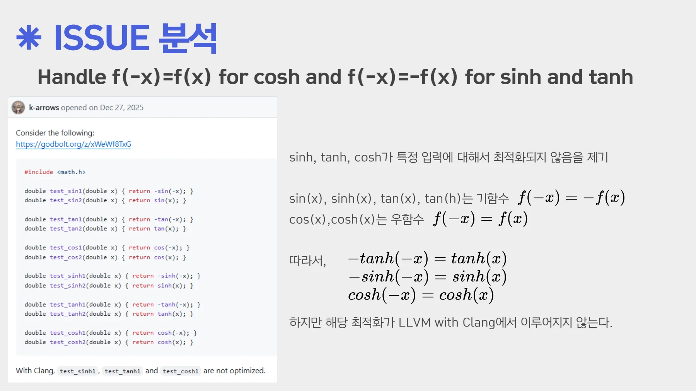
ISSUE 분석 / Godbolt 분석: 다른 컴파일러는 어떻게 최적화하는가? / 다른 컴파일러인 gcc는
ISSUE 분석
Godbolt 분석: 다른 컴파일러는 어떻게 최적화하는가?
다른 컴파일러인 gcc는
-sinh(-x)에 대해서도 sinh(x)
-tanh(-x)에 대해서도 tanh(x)
cosh(-x)에 대해서도 cosh(x)
로 최적화하고 있다.

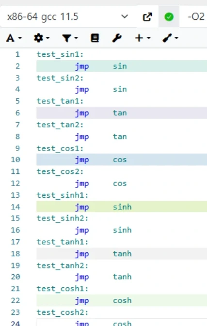
그림 안의 텍스트 · 문자 인식
×86-64 gcc 11.5 -02 ☆- A• T•크 test sinl: jmp 2 test sin2: Jmp test_tanl: jmp test_tan2: jmp test_cos1: 9 10 jmp 11 test_cos2: 12 jmp 13 test_sinhi: 14 jmp 15 test_sinh2: 16 jmp 17 test_tanh1: jmp 18 19 test_tanh2: 20 jmp 21 test_cosh1: 22 jmp 23 test_cosh2: 24 jmp +, sin sin tan tan cos cos sinh sinh tanh tanh cosh cosh
이미지에서 읽은 문자입니다. 코드 기호는 그림에서 확인하세요.

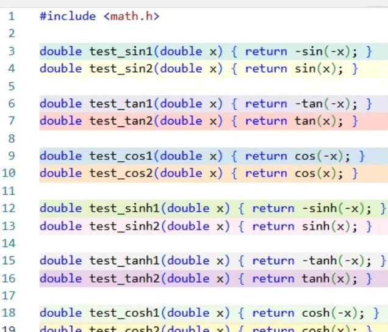
그림 안의 텍스트 · 문자 인식
2
5
6
10
11
13
15
16
18
19
#include <math.h>
double test_sin1(double x) { return -sin(-x); }
double test_sin2(double x) { return sin(x); }
double test_tan1(double x) { return -tan(-x); }
double test_tan2(double x) { return tan(x); }
double test_cos1(double x) { return cos(-x); }
double test_cos2(double x) { return cos(x); }
double test_sinh1(double x) { return -sinh(-x); }
double test_sinh2(double x) { return sinh(x); }
double test_tanh1(double x) { return -tanh(-x); }
double test_tanh2(double x) { return tanh(x); }
double test_cosh1(double x) { return cosh(-x); }
double test_cosh2(double x) { return cosh(x); }이미지에서 읽은 문자입니다. 코드 기호는 그림에서 확인하세요.
페이지 배치·기호·도식 확인하기

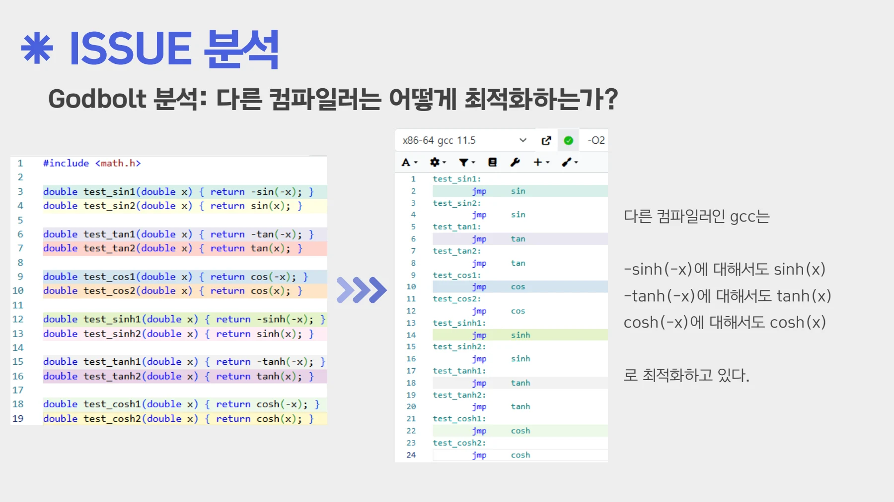
ISSUE 분석 / Godbolt 분석: LLVM은 어떻게 최적화하는가? / LLVM은 assembly를 확인했을 때 -sinh(-x), -tanh(-x), cosh(-x)에 대해
ISSUE 분석
Godbolt 분석: LLVM은 어떻게 최적화하는가?
LLVM은 assembly를 확인했을 때 -sinh(-x), -tanh(-x), cosh(-x)에 대해
서 sinh(x), tanh(x), cosh(x)로 최적화하고 있지 않음을 알 수 있다.
xmm0에는 함수 인자 x가 들어 있기 때문에 이를 부호 비트 마스크(.quad)와
XOR하여 x의 부호를 뒤집는다. (x → -x)
C 표준 라이브러리의 sinh(-x)를 호출한다. (@PLT는 동적 라이브러리의 sinh
함수를 찾아 호출하기 위한 연결 장치)
반환값이 xmm0에 들어오고 다시 XOR하여 부호를 뒤집는다. (= -sinh(-x))

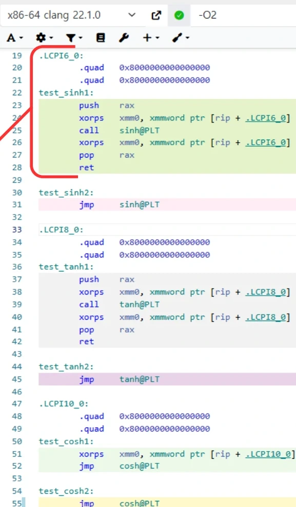
그림 안의 텍스트 · 문자 인식
X86-64 clang 22.1.0 ✓ -02 ☆, A• 트 +, 19 LCPI6_0: 20 .quad 21 •quad 0x8000000000000800 22 test_sinh1: 23 push rax xorps xmm0, xmmword ptr [rip + _LCPI6_0] 25 call sinh&PLT 26 xmme, xmmvord ptr [rip + _LCPI6_0] xorps 27 rax POP 28 ret 29 30 test_sinh2: sinhgPLT 31 jmp 32 33 •LCPI8_0: 34 •quad x800000000 000 0 35 •quad 0x800000000000 0 36 test_tanhi: 37 push rax 38 xmme, xmmvord ptr [rip + _LCPI8_0] xorps 39 call tanhePLT 40 xmm0, xmmvord ptr [rip + _LCPI8_Q] xorps 41 pop rax 42 ret 43 44 test_tanh2: 45 tanh@PLT jmp 46 47 •LCPI10_0: • quad 48 •quad 49 0x8000000000000000 50 test_cosh1: 51 xmma, xmmword ptr [rip + _LCPI10_0] xorps 52 jmp coshaPLT 53 54 test_cosh2: 55 Jmp coshaPLT
이미지에서 읽은 문자입니다. 코드 기호는 그림에서 확인하세요.
페이지 배치·기호·도식 확인하기

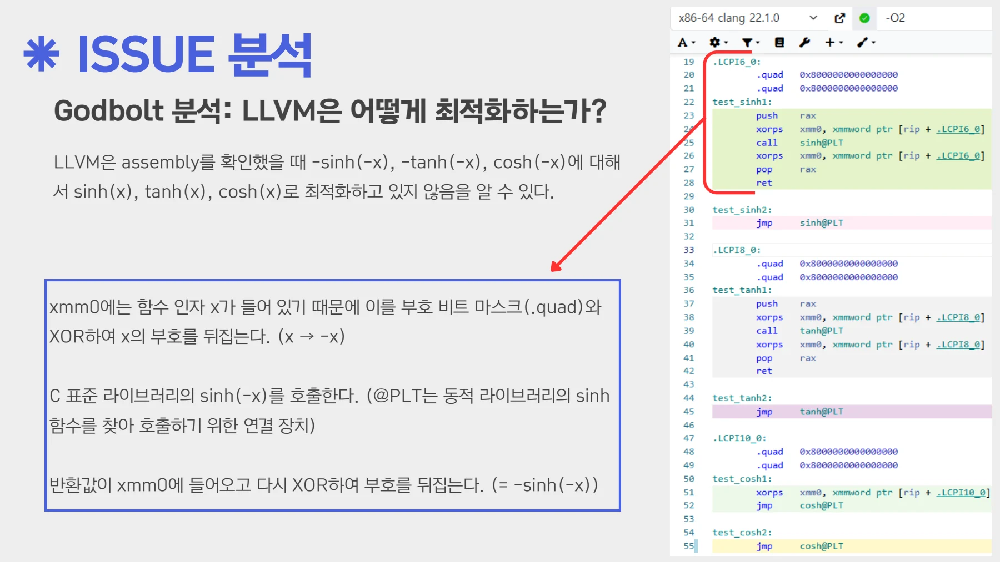
ISSUE 분석 / issue 댓글: sin과 cos을 참고하라. / sin과 cos에는 이미 같은 종류의 최적화가 구현되어 있으니, 그것을 참고해서 sinh, cosh, tanh도 비슷하게 구현할
ISSUE 분석
issue 댓글: sin과 cos을 참고하라.
sin과 cos에는 이미 같은 종류의 최적화가 구현되어 있으니, 그것을 참고해서 sinh, cosh, tanh도 비슷하게 구현할 수 있다.
-fno-math-errno: math 함수의 errno(전역 오류 변수) 설정에 의존하지 않음을 허용하여, LLVM이 math 함수가 설정하는 errno에 구애받지 않고 수
학 함수 호출을 더 자유롭게 단순화할 수 있다. (Clang이 일반 libcall 대신 LLVM intrinsic을 만들 수 있게 한다.) <-sin(-x)의 변환된 IR>
<-sinh(-x)의 변환된 IR>

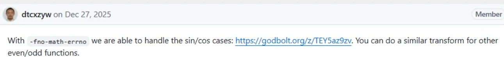
그림 안의 텍스트 · 문자 인식
dtcxzyw on Dec 27,2025\ Member With -fno-math-errno we are able to handle the sin/cos cases: https://godbolt.org/z/TEY5az9zv. You can do a similar transform for other even/odd functions.
이미지에서 읽은 문자입니다. 코드 기호는 그림에서 확인하세요.

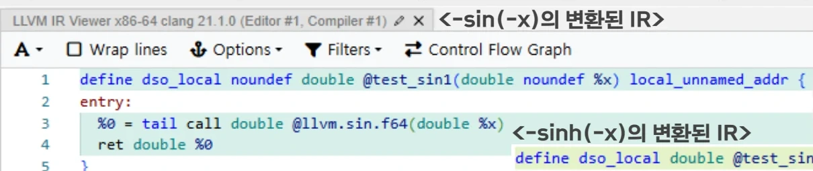
그림 안의 텍스트 · 문자 인식
LLVM IR Viewer x86-64 clang 21.1.0 (Editor #1, Compiler#1) > x <-sin(-X)의 변환된 IR>
T Filters- ☆ Control Flow Graph
A• ㅁ Wrap lines
i Options -
define dso_local noundef double @test_sin1(double noundef %x) 1ocal_unnamed_addr {
1
2
entry:
%0 = tail call double @1lvm.sin.f64(double %x)
3
<-sinh(-x)의 변환된 IR>
ret double %0
4
5이미지에서 읽은 문자입니다. 코드 기호는 그림에서 확인하세요.

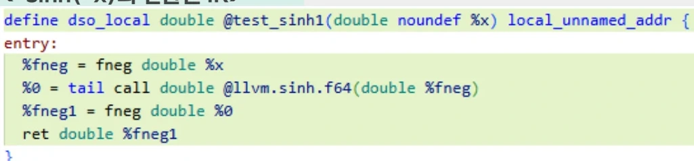
그림 안의 텍스트 · 문자 인식
define dso_local double @test_sinh1(double noundef %x) Iocal_unnamed_addr f entry: %fneg = fneg double %x %0 = tail call double @llvm.sinh.f64(double %fneg) %fnegl = fneg double %0 ret double &fneg1
이미지에서 읽은 문자입니다. 코드 기호는 그림에서 확인하세요.
페이지 배치·기호·도식 확인하기

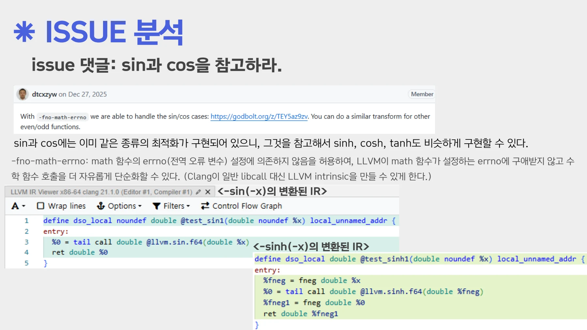
ISSUE 분석 / issue 댓글: sin과 cos을 참고하라. / InstCombine/InstCombineCalls.cpp의 Instruction *InstCombinerImpl::visitC
ISSUE 분석
issue 댓글: sin과 cos을 참고하라.
InstCombine/InstCombineCalls.cpp의 Instruction *InstCombinerImpl::visitCallInst(CallInst &CI) 함수 안
CI는 현재 방문 중인 CallInst, 즉 함수 호출 명령
IntrinsicInst *II = dyn_cast<IntrinsicInst>(&CI);
dyn_cast<IntrinsicInst>는 이 호출이 LLVM intrinsic 호출인지 확인
II는 현재 검사 중인 intrinsic 호출 명령을 가리키는 포인터
Intrinsic::ID IID = II->getIntrinsicID();로 어느 intrinsic인지 Get
II->getArgOperand(0);로 intrinsic의 0번째 인자(%x)를 Get
X와 Sign은 pattern matcher가 성공했을 때 매칭된 IR 값을 넣는 출력 변수
주석에 해당하는 규칙이 있을 경우 각각 sin(x), cos(x) 호출

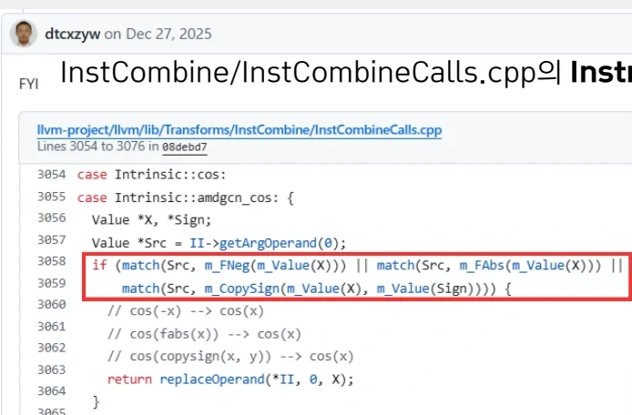
그림 안의 텍스트 · 문자 인식
dtcxzyw on Dec 27, 2025
FYI
llvm-project/lIlvm/lib/Transforms/InstCombine/InstCombineCalls.CPP
Lines 3054 to 3076 in e8debdz
3054 case Intrinsic: :cos:
3055 case Intrinsic::amdgcn_cos: {
3056
Value *x, *sign;
3057
Value *src - II->getArgoperand(0);
3058
if (match(Src, m_FNeg(m_Value(X))) || match(Src, m_FAbs(m_Value(X)))
3059
match(Src, m_Copysign(m_Value(X), m_Value(Sign)))) {
3060
// cos(-x) --> CoS(X)
3061
1/ cos(fabs(x)) --> cos(x)
3062
1/ cos(copysign(x, y)) --> cos(x)
3063
neturn replaceoperand(*II, 0, X);
3064
}
3065이미지에서 읽은 문자입니다. 코드 기호는 그림에서 확인하세요.

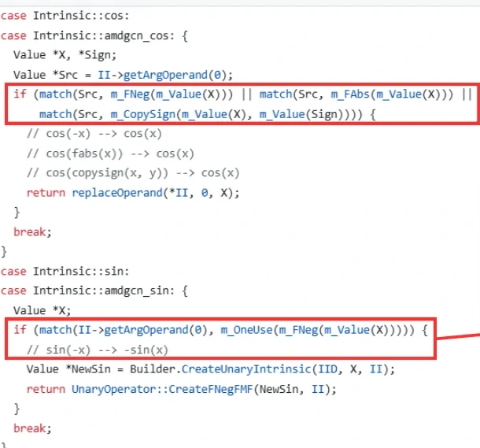
그림 안의 텍스트 · 문자 인식
3054 case Intrinsic: :cos:
3055 case Intrinsic::amdgcn_cos: {
Value *x, *sign;
Value *src - II->getArgoperand(0);
if (match(Src, m_FNeg(m_Value(X))) || match(Src, m_FAbs(m_Value(X)))
match(Src, m_Copysign(m_Value(X), m_Value(Sign)))) {
// cos(-x) --> CoS(X)
1/ cos(fabs(x)) --> cos(x)
1/ cos(copysign(x, y)) --> cos(x)
neturn replaceoperand(*II, 0, X);
}
break;
case Intrinsic: :sin:
case Intrinsic: :amdgcn_sin: {
value *x;
if (match(II->getArgoperand(0), m_OneUse(m_FNeg(m_Value(X)))))
1/ sin(-x) --> -sin(X)
Value *Newsin = Builder.CreateUnaryIntrinsic(IID, X, II);
return Unaryoperator: :CreateFNegFMF(Newsin, II);
}
break;이미지에서 읽은 문자입니다. 코드 기호는 그림에서 확인하세요.
페이지 배치·기호·도식 확인하기

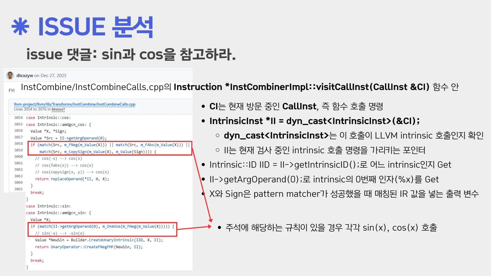
PR 예상 / tan의 최적화 IR 결과가 컴파일 설정에 따라 다르다. / 1. sinh, cosh, tanh는 각각 sin, cos, tan과 수학적으로 대응하는 함수이지만 정의가 다르기 때문에
PR 예상
tan의 최적화 IR 결과가 컴파일 설정에 따라 다르다.
1.sinh, cosh, tanh는 각각 sin, cos, tan과 수학적으로 대응하는 함수이지만 정의가 다르기 때문에 수식적으로 연관시킬 수 없다.
2.tan는 -fno-math-errnor 플래그를 설정하지 않았을 때 IR은 최적화가 되지만, 아닌 경우 최적화가 되지 않는다.
→ Intrinsic을 호출하는 경우와 libcall을 호출하는 경우가 각각 다른 최적화를 필요로 한다.
3.intrinsic 입력과 일반 libcall 입력이 모두 실제로 발생한다면, 두 표현 모두에서 홀짝성 변환이 필요한지 각각 검증해야 한다.
intrinsic 입력은 llvm\lib\Transforms\InstCombine\InstCombineCalls.cpp에서 변환되고, libcall 입력은
llvm\lib\Transforms\Utils\SimplifyLibCalls.cpp에서 변환된다.
⇒ 일반 libcall 경로와 intrinsic 경로가 서로 다른 최적화 규칙을 가지고 있으며, 이슈 당시 두 경로의 지원 범위가 일치하지 않았다.

그림 안의 텍스트 · 문자 인식
x86-64 clang 21.1.0 -02 -fno-math-errno
이미지에서 읽은 문자입니다. 코드 기호는 그림에서 확인하세요.

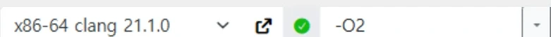
그림 안의 텍스트 · 문자 인식
x86-64 clang 21.1.0 ~ -02
이미지에서 읽은 문자입니다. 코드 기호는 그림에서 확인하세요.

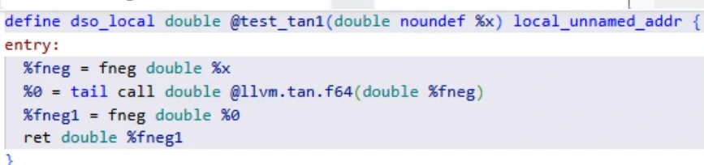
그림 안의 텍스트 · 문자 인식
define dso_local double @test_tan1(double noundef %x) 1ocal_unnamed_addr {
entry:
%fneg = fneg double %x
%0 = tail call double @1lvm.tan.f64(double &fneg)
%fnegl = fneg double %0
ret double %fneg1이미지에서 읽은 문자입니다. 코드 기호는 그림에서 확인하세요.

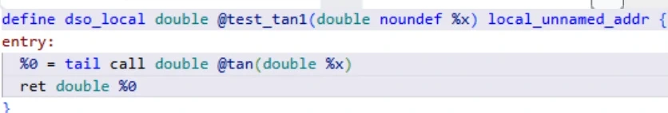
그림 안의 텍스트 · 문자 인식
define dso_local double @test_tan1(double noundef %x) 1ocal_unnamed_addr {
entry:
%0 = tail call double @tan(double &x)
ret double %0이미지에서 읽은 문자입니다. 코드 기호는 그림에서 확인하세요.
페이지 배치·기호·도식 확인하기

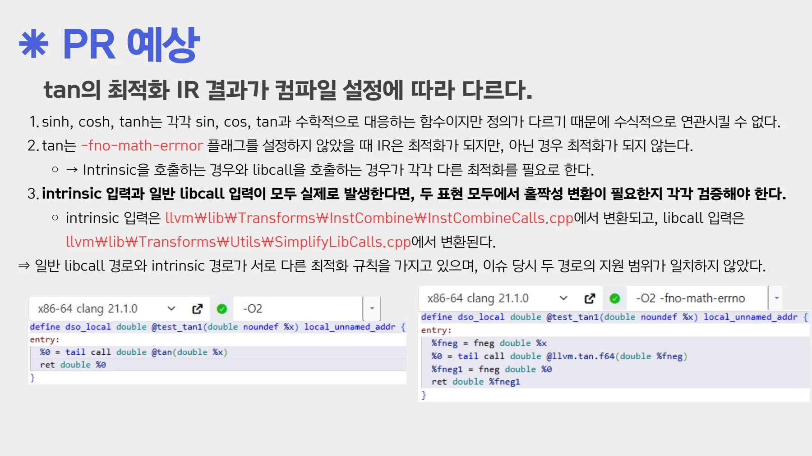
PR 예상 / 어디를 수정해야 하는가. / LLVM처럼 큰 코드베이스에서는 함수 이름을 추측하기보다 IR의 입력 형태에서 시작해서 디스패치 경로를 역추적하는 방식 사용
PR 예상
어디를 수정해야 하는가.
LLVM처럼 큰 코드베이스에서는 함수 이름을 추측하기보다 IR의 입력 형태에서 시작해서 디스패치 경로를 역추적하는 방식 사용
InstCombineCalls.cpp의 visitCallInst()가 일반 호출 명령을 방문하는 상위 지점
SimplifyLibCalls.cpp의 LibCallSimplifier::optimizeCall()이 알려진 라이브러리 호출을 단순화하는 진입점
intrinsic은 Intrinsic::xxx이지만 libcall은 LibFunc_xxx 형태로 판별하므로 이를 검색
InstCombine만 실행했을 때 변환된다면 `llvm/lib/Transforms/InstCombine/` 내에 있는 것이고 CallInst의 방문 함수인
visitCallInst에서 외부 객체나 optimizeCall() 호출을 탐색하여 LibCallSimplifier 도출
이슈 댓글에서 알 수 있었던 intrinsic 최적화 지점부터 탐색
⇒ 각각의 변환 지점을 찾아 수정
1.sin, cos, tan의 libcall에서의 최적화 방식을 sinh, cosh, tanh에 적용
2.sin, cos의 intrinsic에서의 최적화 방식을 tan, sinh, cosh, tanh에 적용
페이지 배치·기호·도식 확인하기

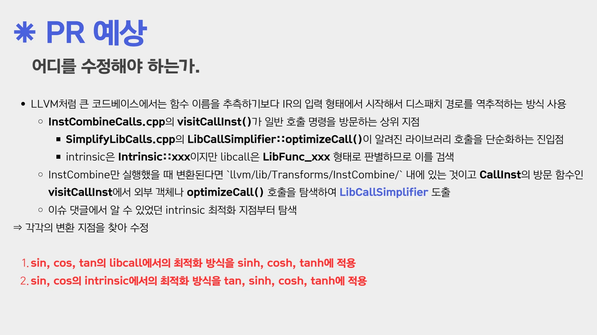
PR 예상 / sin, cos, tan의 libcall에서의 최적화 방식을 sinh, cosh, tanh에 적용 / 1. SimplifyLibCalls.cpp에서 LibFunc_sin을 검색하면 아
PR 예상
sin, cos, tan의 libcall에서의 최적화 방식을 sinh, cosh, tanh에 적용
1.SimplifyLibCalls.cpp에서 LibFunc_sin을 검색하면 아래 세 함수를 호출하는 것을 알 수 있음
optimizeTrigInversionPairs / optimizeUnaryDoubleFP / optimizeSymmetric
2.optimizeCall → optimizeFloatingPointLibCall → optimizeSymmetric
optimizeSymmetric이 관련 함수임을 함수명에서 추론 가능
optimizeSymmetric이 각 LibFunc_XXX에 대해 optimizeSymmetricCall을 호출 (isEven으로 짝/홀 구분
3.optimizeSymmetricCall에서 홀함수와 짝함수 처리
페이지 배치·기호·도식 확인하기

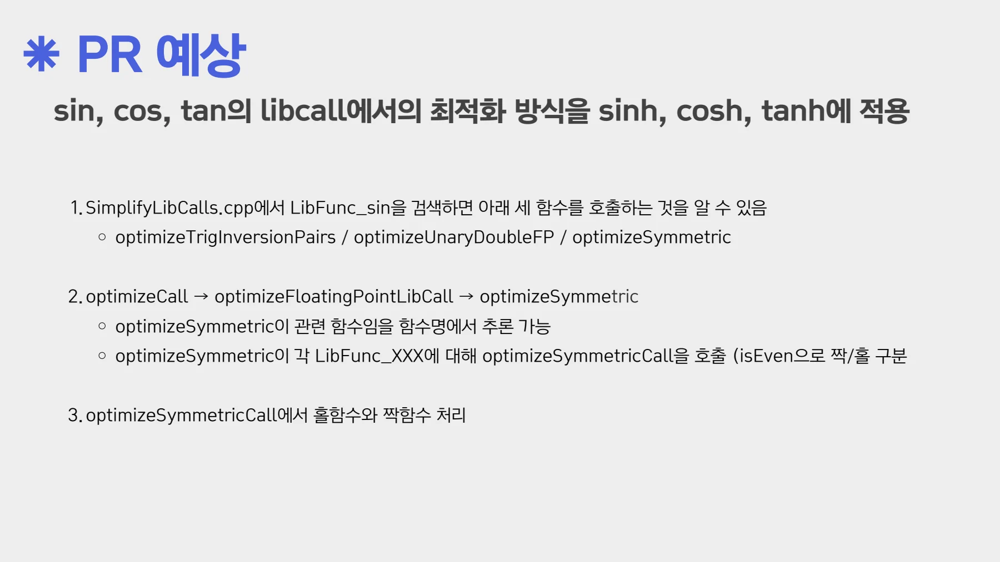
PR 예상 / sin, cos, tan의 libcall에서의 최적화 방식을 sinh, cosh, tanh에 적용 / ⇒ LibFunc_sinh, LibFunc_cosh, LibFunc_tanh는 없
PR 예상
sin, cos, tan의 libcall에서의 최적화 방식을 sinh, cosh, tanh에 적용
⇒ LibFunc_sinh, LibFunc_cosh, LibFunc_tanh는 없다.

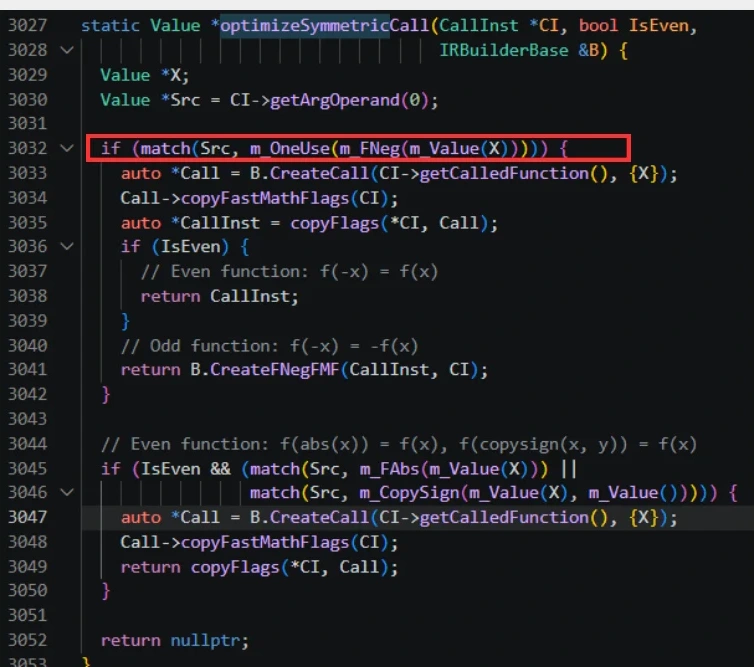
그림 안의 텍스트 · 문자 인식
static Value *optimizeSymmetricCall(Callinst *CI, bool IsEven,
3027
3028 V
IRBuilderBase &B) {
3029
Value
*X;
3030
Value *Src = CI->getArgoperand(0);
3031
3032
if (match(Src, m OneUse(m FNeg(m Value(X))))) f
3033
auto *Call - B.CreateCall(CI->getCalledFunction(), {x});
3034
Call->copyFastMathFlags(CI);
3035
auto *CallInst = copyFlags(*CI, Call);
3036 ~
if (IsEven) {
3037
// Even function: f(-x) = f(x)
3038
return CallInst;
3039
3040
1/ Odd function: f(-x) = -f(x)
3041
return B.CreateFNegFMF(CallInst, CI);
3042
3043
3044
1/ Even function: f(abs(x)) = f(x), f(copysign(x, y)) = f(x)
if (IsEven && (match(Src, m_FAbs(m_Value(X))) |I
3045
match(Src, m_CopySign(m_Value(X), m_Value())))) {
3046 v
3047
auto *Call = B.CreateCall(CI->getCalledFunction(), {x});
Call->copvFastMathFlags(CI);
3048
return copyFlags(*CI, Call);
3049
3050
3051
return nullptr;
3052
3053이미지에서 읽은 문자입니다. 코드 기호는 그림에서 확인하세요.

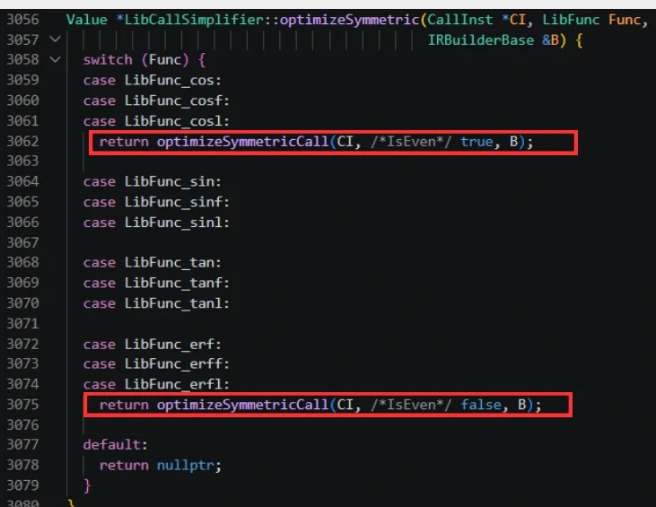
그림 안의 텍스트 · 문자 인식
3056
Value *LibCallSimplifier: :optimizeSymmetric(CallInst *CI, LibFunc Func,
3057 V
IRBuilderBase &B) {
switch (Func) {
3058
3059
case Librunc_cos:
3060
case Librunc_cost:
3061
case LibFunc cosl:
return optimizesymmetricCall(CI, /*IsEven*/ true, B);
3062
3063
3064
case LibFunc_sin:
3065
case LibFunc_sinf:
3066
case Librunc_sinl:
3067
3068
case LibFunc_tan:
3069
case LibFunc_tanf:
3070
case LibFunc_tanl:
3071
3072
case LibFunc_erf:
3073
case LibFunc_erff:
3074
case LibFunc enfl:
3075
return optimizeSymmetricCall(CI, /*IsEven*/ false, B);
3076
3077
default:
return nullptr;
3078
3079
3080이미지에서 읽은 문자입니다. 코드 기호는 그림에서 확인하세요.
페이지 배치·기호·도식 확인하기

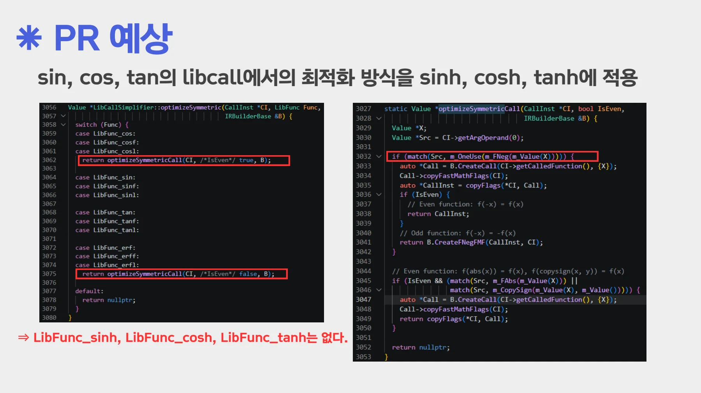
PR 예상 / sin, cos, tan의 libcall에서의 최적화 방식을 sinh, cosh, tanh에 적용 / 홀함수에서 f(-x) → -f(x)로 해주지만 -(-f(x)) → f(x)에 대한
PR 예상
sin, cos, tan의 libcall에서의 최적화 방식을 sinh, cosh, tanh에 적용
홀함수에서 f(-x) → -f(x)로 해주지만 -(-f(x)) → f(x)에 대한 처리는
이후 다른 부분에서 이루어질 것으로 예상 가능함
결론적으로 optimizeSymmetric의 case에 LibFunc_sinh,
LibFunc_cosh, LibFunc_tanh 추가
이 때 하이퍼볼릭 함수의 다른 변형인 LibFunc_XXXhf(float),
LibFunc_XXXhl(long double)도 추가 필수
함수 위치를 찾는 게 관건

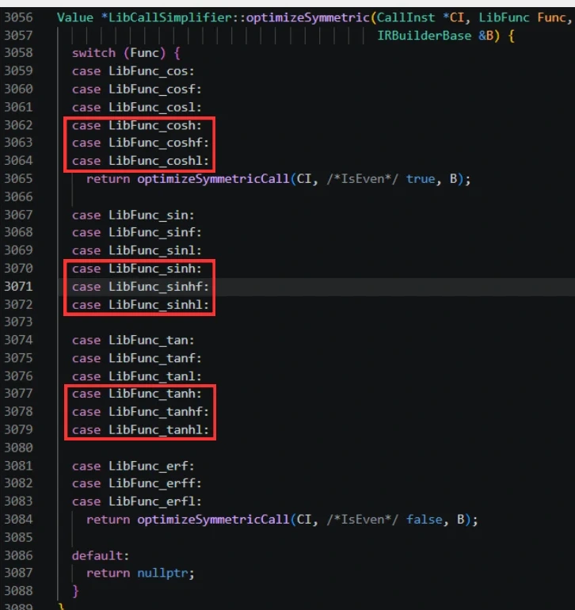
그림 안의 텍스트 · 문자 인식
3056
3057
3058
3059
3060
3061
3062
3063
3064
3065
3066
3067
3068
3069
3070
3071
3072
3073
3074
3075
3076
3077
3078
3079
3089
3081
3082
3083
3084
3085
3086
3087
3088
3089
Value *LibCallSimplifier::optimizeSynmetric(CallInst *CI, LibFunc Func,
IRBuilderBase &B) {
switch (Func) {
case LibFunc_cos:
case LibFunc_cosf:
case Librunc_cosl:
case Librunc_cosh:
case LibFunc_coshf:
case LibFunc coshl:
return optimizesymmetricCall(CI, /*IsEven*/ true, B);
case LibFunc_sin:
case LibFunc sinf:
case LibFunc sinl:
case LibFunc sinh:
case Librunc_sinhf:
case Librunc sinhl:
case LibFunc_tan:
case LibFunc_tanf:
case LibFunc tanl:
case Librunc tanh:
case LibFunc tanhf:
case Libeunc tanhi.
case LibFunc_erf:
case LibFunc_erff:
case LibFunc_erfl:
return optimizeSymmetricCall(CI, /*IsEven*/ false, B);
default:
return nullptr;이미지에서 읽은 문자입니다. 코드 기호는 그림에서 확인하세요.
페이지 배치·기호·도식 확인하기

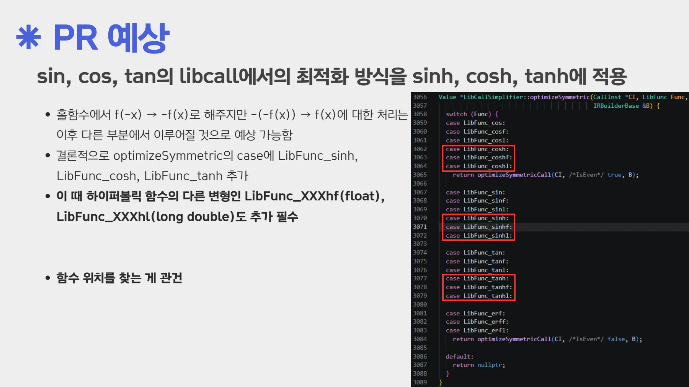
PR 예상 / sin, cos의 intrinsic에서의 최적화 방식을 tan, sinh, cosh, tanh에 적용 / 이슈 댓글에서의 `Instruction *InstCombinerImpl::vi
PR 예상
sin, cos의 intrinsic에서의 최적화 방식을 tan, sinh, cosh, tanh에 적용
이슈 댓글에서의 `Instruction *InstCombinerImpl::visitCallInst(CallInst &CI)`가 주요 부분임을 알 수 있음
만약 이슈 댓글이 없었다면, 문제가 되는 IR 명령은 call이므로 'visitCallInst'을 추론해낼 수 있음
sinh, tanh, cosh의 Intrinsic이 존재함을 Gotbolt의 결과에서 알 수 있으므로 해당 intrinsic을 조건문에 추가하는
방식으로 해결할 수 있음.
amdgcn_XXX는 AMD GPU의 명령어 집합과 코드 생성 방식을 가리키며, 일반적인 llvm.sin.*과 달리 AMD GPU 하드웨어
연산에 더 직접적으로 대응하기 위해 존재한다.
각 하이퍼볼릭 함수도 amdgcn_XXX을 가진다.
기존 case 문에서 amdgcn_sin과 amdgcn_cos가 홀짝성에 대한 처리를 하므로 amdgcn_sinh, amdgcn_cosh,
amdgcn_tanh, amdgcn_tan도 추가하는 것이 합리적 (amdgcn_cosh, amdgcn_tan, amdgcn_sinh는 존재 X)
페이지 배치·기호·도식 확인하기

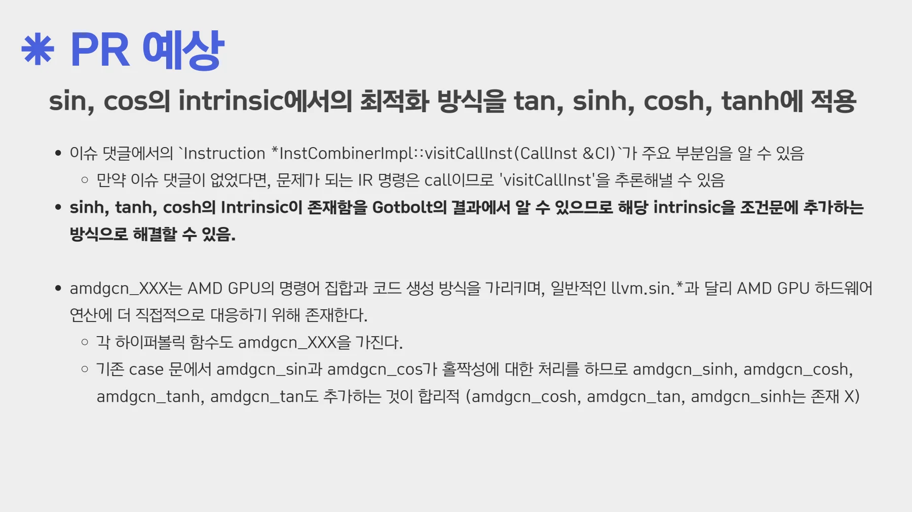
PR 예상 / sin, cos의 intrinsic에서의 최적화 방식을 tan, sinh, cosh, tanh에 적용
PR 예상
sin, cos의 intrinsic에서의 최적화 방식을 tan, sinh, cosh, tanh에 적용

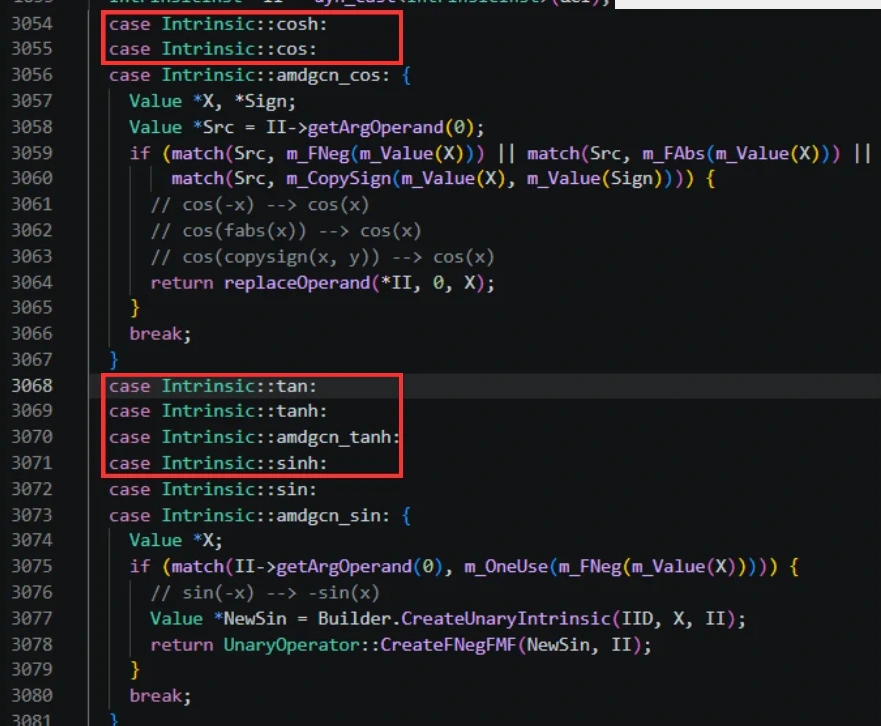
그림 안의 텍스트 · 문자 인식
3054
3055
3056
3057
3058
3059
3060
3061
3062
3063
3064
3065
3066
3067
3068
3069
3070
3071
3072
3073
3074
3075
3076
3077
3078
3079
3080
3081
case Intrinsic: :cosh:
case Intrinsic::cos:
case Intrinsic: :amdgcn_cos:
Value *X, *Sign;
Value *Src = II->getArgOperand(0);
if (match(Src, m_FNeg(m_Value(X))) I| match(Src, m_FAbs(m_Value(x))) |I
match(Src, m_Copysign(m_Value(X), m_Value(Sign)))) {
1/ cos(-x) --> cos(x)
1/ cos(fabs(x)) --> cos(x)
1/ cos(copysign(x, y)) --> cos(x)
return replaceOperand(*II, 0, X);
}
break;
case Intrinsic::tan:
case Intrinsic: :tanh:
case Intrinsic::amdgcn_tanh:
case Intrinsic::sinh:
case Intrinsic::sin:
case Intrinsic::amdgcn_sin: {
Value *x;
if (match(II->getArgoperand(@), m_OneUse(m_FNeg(m_Value(X))))){
1/ sin(-x) --> -sin(x)
Value *Newsin = Builder.CreateUnaryIntrinsic(IID, X, II);
return UnaryOperator::CreateFNegFMF(Nevsin, II);
break;이미지에서 읽은 문자입니다. 코드 기호는 그림에서 확인하세요.
페이지 배치·기호·도식 확인하기

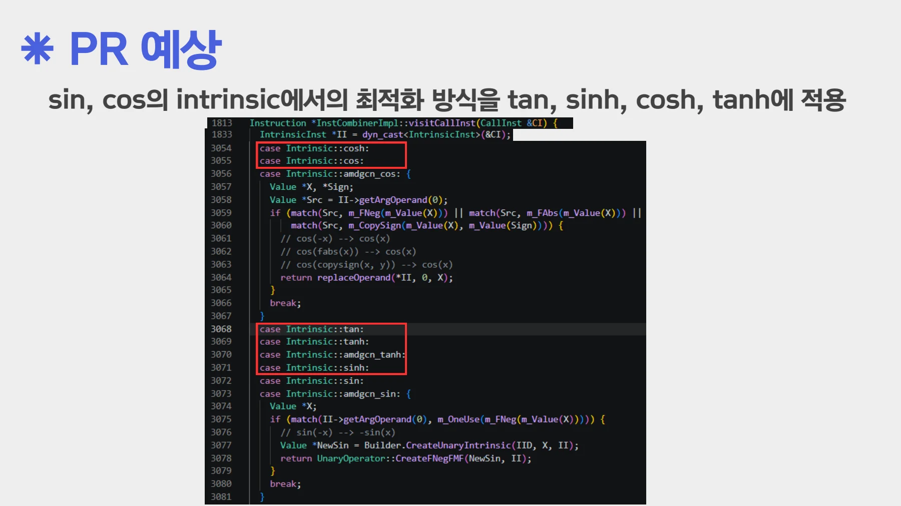
PR 예상 확인 / opt를 사용하여 패치 적용 후 결과(.ll) 확인 / <-fno-math-error 적용 X / libcall 사용> <-fno-math-error 적용 O / intrinsi
PR 예상 확인
opt를 사용하여 패치 적용 후 결과(.ll) 확인
<-fno-math-error 적용 X / libcall 사용>
<-fno-math-error 적용 O / intrinsic 사용>

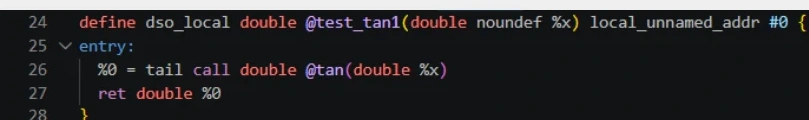
그림 안의 텍스트 · 문자 인식
24 define dso_local double @test_tan1(double noundef %x) 1ocal_unnamed_addr #0 t 25 entry: 26 %0 - tail call double etan(double %x) 27 ret double %0 28
이미지에서 읽은 문자입니다. 코드 기호는 그림에서 확인하세요.

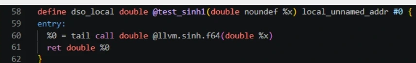
그림 안의 텍스트 · 문자 인식
58
define dso_local double @test_sinh1(double noundef %x) 1ocal_unnamed_addr #0 {
59
entry:
60
%0 - tail call double @11vm.sinh.f64(double %x)
61
ret double %0
62
}이미지에서 읽은 문자입니다. 코드 기호는 그림에서 확인하세요.

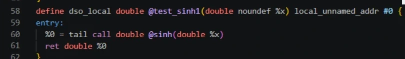
그림 안의 텍스트 · 문자 인식
58
define dso_local double @test_sinh1(double noundef %x) 1ocal_unnamed_addr #0 {
59
entry:
%0 - tail call double @sinh(double %x)
61
ret double %0이미지에서 읽은 문자입니다. 코드 기호는 그림에서 확인하세요.

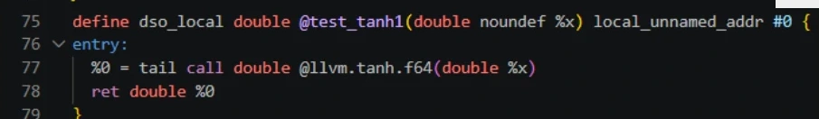
그림 안의 텍스트 · 문자 인식
75
define dso_local double @test_tanh1(double noundef %x) 1ocal_unnamed_addr #0 {
76 ~ entry:
77
%0 = tail call double @llvm.tanh.f64(double %x)
78
ret double %0
}
79이미지에서 읽은 문자입니다. 코드 기호는 그림에서 확인하세요.

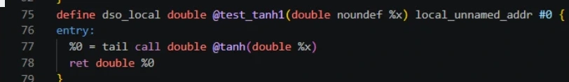
그림 안의 텍스트 · 문자 인식
define dso local double otest_tanh1(double noundef %x) 1ocal_unnamed_addr #o {
76
entry:
77
%0 = tail Call double atanh(double %x)
78
net double %0
79이미지에서 읽은 문자입니다. 코드 기호는 그림에서 확인하세요.

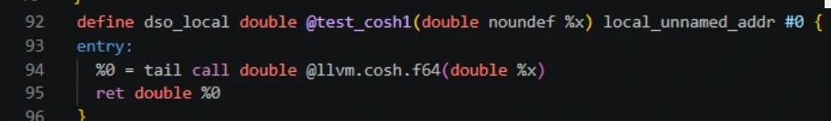
그림 안의 텍스트 · 문자 인식
92
93
94
95
96
define dso_local double @test_cosh1(double noundef %x) 1ocal_unnamed_addr #0 {
entry:
%0 = tail call double @1lvm.cosh.f64(double %x)
net double %0이미지에서 읽은 문자입니다. 코드 기호는 그림에서 확인하세요.

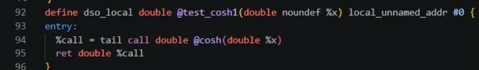
그림 안의 텍스트 · 문자 인식
92
define dso_local double @test_cosh1(double noundef %x) 1ocal_unnamed_addr #o {
93
entrv:
94
%call = tail call double @cosh(double %x)
95
ret double %ca]기
96이미지에서 읽은 문자입니다. 코드 기호는 그림에서 확인하세요.
페이지 배치·기호·도식 확인하기

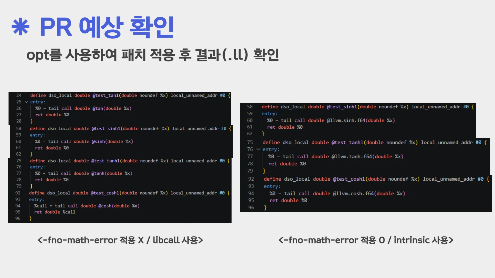
PR 예상 확인 / clang를 사용하여 패치 적용 후 결과(.s) 확인 / <-fno-math-error 적용 X / libcall 사용> <-fno-math-error 적용 O / intrins
PR 예상 확인
clang를 사용하여 패치 적용 후 결과(.s) 확인
<-fno-math-error 적용 X / libcall 사용>
<-fno-math-error 적용 O / intrinsic 사용>

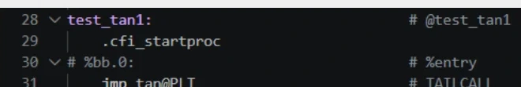
그림 안의 텍스트 · 문자 인식
28 test_tan1: # @test_tan1 29 •cfi_startproc #%entry V # %bb.0: Jmp tan@PLT # TAILCALL
이미지에서 읽은 문자입니다. 코드 기호는 그림에서 확인하세요.

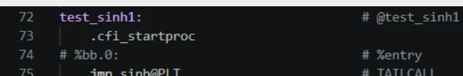
그림 안의 텍스트 · 문자 인식
72 test_sinh1: # @test_sinh1 73 .cfi_startproc # %entry 74 # %bb.0: Jmp sinhaPLT 75 # TAILCALL
이미지에서 읽은 문자입니다. 코드 기호는 그림에서 확인하세요.

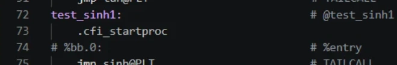
그림 안의 텍스트 · 문자 인식
test_sinh1: # @test_sinh1 .cfi_startproc # %bb.0: # %entry Jmp sinh@PLT # TAILCALL
이미지에서 읽은 문자입니다. 코드 기호는 그림에서 확인하세요.

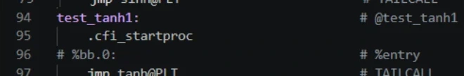
그림 안의 텍스트 · 문자 인식
94 test tanh1: # atest_tanh1 95 .cfi_startproc 96 # %bb.0: # %entry 97 jmp tanhaPLT # TAILCALL
이미지에서 읽은 문자입니다. 코드 기호는 그림에서 확인하세요.

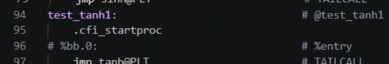
그림 안의 텍스트 · 문자 인식
94 test_tanh1: # @test_tanh1 95 •cfi_startproc 96 # %bb.0: # %entry 97 Jmp tanh@PLT # TAILCALL
이미지에서 읽은 문자입니다. 코드 기호는 그림에서 확인하세요.

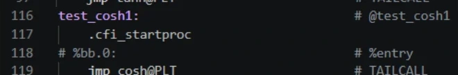
그림 안의 텍스트 · 문자 인식
116 test cosh1: #@test_cosh1 117 •cfi_startproc # %entry 118 # %bb.0: 119 Jmp coshaPLT # TAILCALL
이미지에서 읽은 문자입니다. 코드 기호는 그림에서 확인하세요.

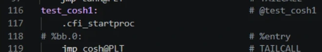
그림 안의 텍스트 · 문자 인식
116 test_cosh1: # @test_cosh1 117 .cfi_startproc 118 # %bb.0: # %entry 119 1mp coshaPLT # TAILCALL
이미지에서 읽은 문자입니다. 코드 기호는 그림에서 확인하세요.
페이지 배치·기호·도식 확인하기

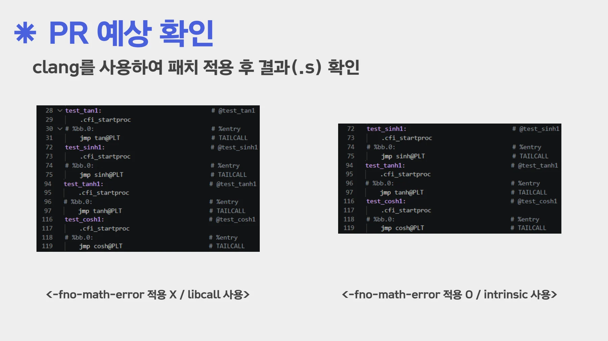
실제 PR 확인 / #173730 PR / llvm/lib/Transforms/InstCombine/InstCombineCalls.cpp
실제 PR 확인
#173730 PR
llvm/lib/Transforms/InstCombine/InstCombineCalls.cpp
예상대로 case문을 추가
변수명과 주석을 추가된 함수의 의미까지 포함하도록 수정!
llvm/test/Transforms/InstCombine/hyperbolic-functions.ll
-f(-x)에 대한 각 하이퍼볼릭 함수의 테스트 케이스들을 추가
⇒ libcall에 대한 issue 해결이 마저 이루어지지 않음

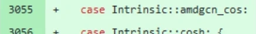
그림 안의 텍스트 · 문자 인식
3055
case Intrinsic: :amdgcn_cos:
case Intrinsic::cosh: {
3056이미지에서 읽은 문자입니다. 코드 기호는 그림에서 확인하세요.

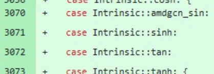
그림 안의 텍스트 · 문자 인식
3056
3070
3071
3072
3073
case Intrinsic: :amdgcn_sin:
case Intrinsic::sinh:
case Intrinsic::tan:
case Intrinsic::tanh: {이미지에서 읽은 문자입니다. 코드 기호는 그림에서 확인하세요.

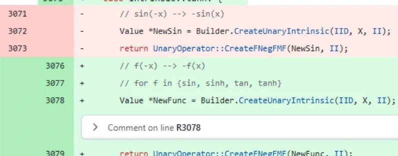
그림 안의 텍스트 · 문자 인식
3071
3072
3073
3076
3077
3078
1/ sin(-x) --> -sin(x)
value *newsin = Builder.CreateunaryIntrinsic(IID, X, II);
return Unaryoperator: :CreateFNegFMF(Newsin, II);
1/ f(-x) --> -f(x)
1/ for f in {sin, sinh, tan, tanhy
Value *NewFunc = Builder.CreateunaryIntrinsic(IID, X, II);
> Comment on line R3078
return Unaryoperator::CreateFNegFMF(NewFunc, II);
3079
+이미지에서 읽은 문자입니다. 코드 기호는 그림에서 확인하세요.

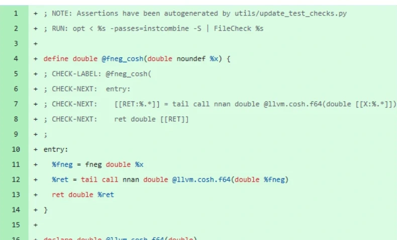
그림 안의 텍스트 · 문자 인식
+ ; NOTE: Assertions have been autogenerated by utils/update_test_checks.py 1 2 + ; RUN: opt < %s -passes=instcombine -s | FileCheck %s 3 - (s sapunou atqnop)uso saui tqnop aursap + + ; CHECK-LABEL: @fneg_cosh( + ; CHECK-NEXT: entry: + ; CHECK-NEXT: [[RET:%.*1] = tail call nnan double e11vm.cosh.f64(double [tx:%.*1]) + ; CHECK-NEXT: ret double [TRET11 9 + ; 10 + entry: 11 x% atqnop aaut = 0au4% gret = tail call nnan double @11vm.cosh.f64(double %fneg) 12 13 7ㄹd% atqnop 구a 14 +} 15 + declare double @11vm.cosh.f64(double) 16
이미지에서 읽은 문자입니다. 코드 기호는 그림에서 확인하세요.
페이지 배치·기호·도식 확인하기

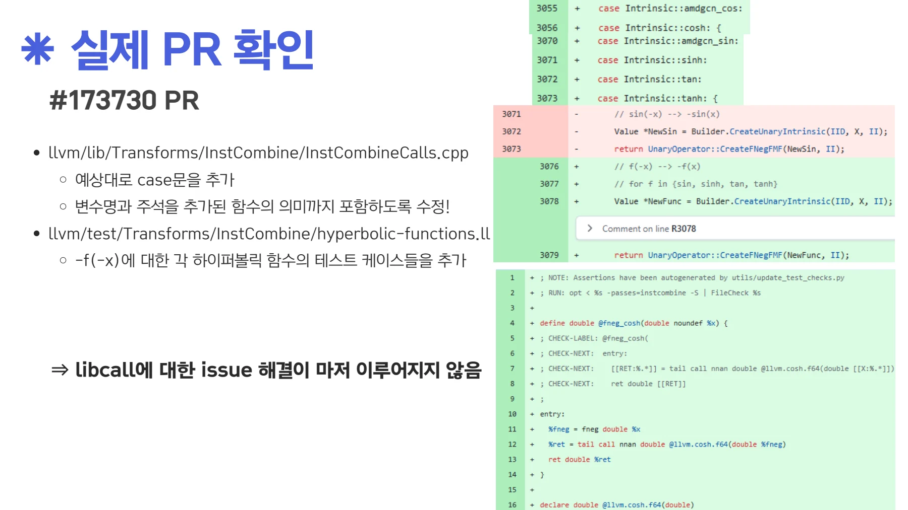
실제 PR 확인 / #193586 PR / llvm/lib/Transforms/Utils/SimplifyLibCalls.cpp
실제 PR 확인
#193586 PR
llvm/lib/Transforms/Utils/SimplifyLibCalls.cpp
예상대로 case문을 추가
llvm/test/Transforms/InstCombine/hyperbolic-lib-functions.ll
-f(-x)에 대한 각 하이퍼볼릭 함수의 테스트 케이스들을 추가
⇒ libcall에 대한 issue 해결을 반영한 PR

그림 안의 텍스트 · 문자 인식
xuhongxu96 commented on Apr 23 • edited - Contributor Fix #173706 (it is closed but not really fixed). The previous PR #173730 only addressed the intrinsics @11vm.sinh.f64 etc, which does not have effects on the C program compiled without -fno-math-errno . 3033 + case Librunc_cosh: l validated the optimization by clang -02 .
이미지에서 읽은 문자입니다. 코드 기호는 그림에서 확인하세요.

그림 안의 텍스트 · 문자 인식
3033 + case Librunc_cosh: + case LibFunc_coshf: 3034 3035 + case LibFunc_coshl:
이미지에서 읽은 문자입니다. 코드 기호는 그림에서 확인하세요.

그림 안의 텍스트 · 문자 인식
case LibFunc_sinh: 3042 + 3043 + case LibFunc_sinhf: 3044 + case LibFunc_sinhl:
이미지에서 읽은 문자입니다. 코드 기호는 그림에서 확인하세요.

그림 안의 텍스트 · 문자 인식
3050 + case LibFunc_tanh: 3051 + case LibFunc_tanhf: 3052 *case LibFunc_tanhl:
이미지에서 읽은 문자입니다. 코드 기호는 그림에서 확인하세요.

그림 안의 텍스트 · 문자 인식
4 + declare double @cosh(double) 5 + declare float @coshf(float) 6 + declare fp128 @coshl(fp128)
이미지에서 읽은 문자입니다. 코드 기호는 그림에서 확인하세요.

그림 안의 텍스트 · 문자 인식
+ define double @cosh_negated_arg(double %x) < 20 21 + : CHECK-LABEL: @cosh_negated_arg( 22 + ; CHECK-NEXT: [[COSH:%.*1] = call double acosh(double [[X:%.*]]) 23 + ; CHECK-NEXT: ret double [[COSH]] 24 + j 25 + %neg = fneg double %x 26+ %r = call double @cosh(double %neg) 27 + ret double sr 28 +,
이미지에서 읽은 문자입니다. 코드 기호는 그림에서 확인하세요.
페이지 배치·기호·도식 확인하기

정리 / issue 분석 하이퍼볼릭 함수의 홀짝성에 대한 최적화 이슈 / PR 예상 intrinsic(-fno-math-errno)을 호출하는 부분만 수정하면 될 것으로 생각하였으나
정리
issue 분석
PR 예상
PR 예상 확인
실제 PR #173037
실제 PR #193586
느낀점
하이퍼볼릭 함수의 홀짝성에 대한 최적화 이슈
intrinsic(-fno-math-errno)을 호출하는 부분만 수정하면 될 것으로 생각하였으나 libcall을 호출하는 부분도 수정해야 했음
-fno-math-errno 여부에 따라 테스트 확인
intrinsic 처리 부분만 수정 + 변수명과 주석 수정까지 고려해야 함을 확인
libcall 처리 부분까지 수정
비교적 간단한 issue 내용과 수정 범위여서 GPT와 함께 추론까지 진행 완료
페이지 배치·기호·도식 확인하기

L / L / V
감사합니다.
L L V M
페이지 배치·기호·도식 확인하기

핵심 원리와 편집 주석
문제와 수학적 성질
sinh와 tanh는 홀함수다. cosh는 짝함수다. 이 성질을 사용하면 호출 전후의 불필요한 부호 반전을 줄일 수 있다.
-sinh(-x) → sinh(x)
-tanh(-x) → tanh(x)
cosh(-x) → cosh(x)작성자는 GCC와 Clang의 기계어를 비교했다. 분석 당시 Clang 출력에는 같은 성질을 적용하지 못한 경우가 남아 있었다.
두 입력 경로 구분
| 입력 형태 | 관련 코드 | 확인할 내용 |
|---|---|---|
| LLVM intrinsic | InstCombineCalls.cpp | visitCallInst의 intrinsic 분기 |
| 알려진 라이브러리 호출 | SimplifyLibCalls.cpp | LibCallSimplifier와 optimizeSymmetric 경로 |
-fno-math-errno 같은 설정은 생성되는 호출 형태에 영향을 줄 수 있다. 한 경로에서만 동작을 확인하면 다른 경로의 누락을 놓친다.
분석 순서
- 옵션을 바꾸어 IR의 호출 형태를 확인한다.
- 기존 sin·cos 처리를 찾는다.
- 실제 입력이 통과하는 디스패치 경로를 추적한다.
- opt 출력과 최종 기계어를 각각 비교한다.
- 기존 PR의 코드와 테스트를 예상한 수정 범위와 비교한다.
자료는 intrinsic을 처리한 PR #173730과 libcall을 처리한 PR #193586을 나누어 설명한다. 함수 종류가 늘면 변수명과 주석도 그 범위를 나타내야 한다.
결과와 문서의 경계
핵심 학습은 수학식 자체보다 입력 표현과 구현 계층의 차이다. 같은 소스 식도 컴파일 옵션에 따라 다른 최적화 경로를 통과한다.
문서 전문과 버전
- PDFPDF 원자료 · 20쪽LLVM-good_first_issue_173706.pdf
각 자료는 별도의 버전입니다. 같은 주제라도 구현 상태·설명 범위·수치가 다를 수 있습니다.
관련 이슈와 PR
구현·병합 상태와 측정값은 해당 제출 자료의 작성 시점 기준입니다.